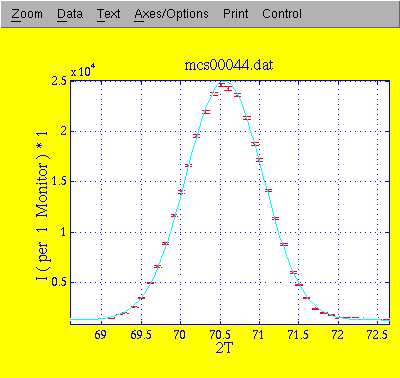
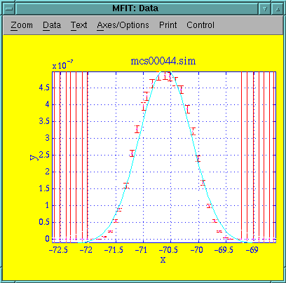
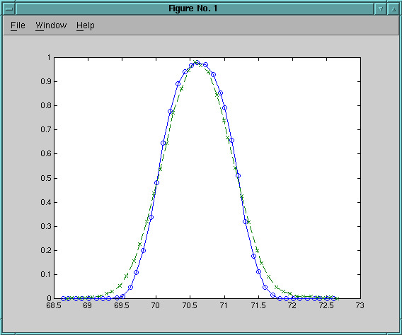

This experiment is a Q-scan in 2-axis focusing mode on the Al2O3 sample. 5meV neutrons with the filter down. Collimation is 60' in the S-A position and open A-D.
Value Std Err
Amplitude 23803.7 169.103
Centre 70.557 0.00286914
Width 0.485292 0.00282019
Background 1238.22 27.0742
Chi^2 6.54165 Q(Chi^2) 2.8E-56

Points from simulating 2E6 neutrons, instrument definition alu-2axis.instr revision 1.3. Data file mcs00044-3.sim.
Mfit does not do much useful with the simulated data (fitting does not converge or behaves strangely). Hand-fitting suggests the following, which is very close to the measured data:
Parameter Value Uncertainty Amplitude 5.2000e-07 0.0000e+00 Centre -7.0599e+01 1.4153e-19 Width 4.8000e-01 0.0000e+00 Background -1.3387e-08 7.5386e-12 Chi^2 173.379 Q(Chi^2) 0
The center of the peaks do not agree completely. This may be due to a misaligned sample during the measurements (it was about 1mm off center). We may investigate this by simulating a similarly offset sample in the instrument definition.
This is a comparison (no fitting) between simulated (blue) and measured data, corrected for 0.05 degrees off-center peak. Clearly the width is very close, but just as clearly the shapes do not match perfectly. Apparently the simulation just does not result in a gauss shaped peak. 